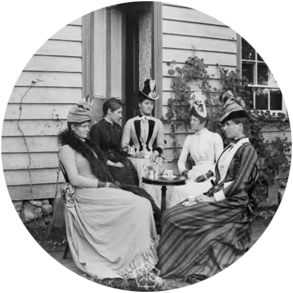

The word hygiene comes from Hygeia, the Greek goddess of health,
who was the daughter of Aesculapius, the god of medicine.
Since the arrival of the Industrial Revolution (c.1750-1850)
and the discovery of the germ theory of disease in the second half of the nineteenth century,
hygiene and sanitation have been at the forefront of the struggle against illness and disease.
Egyptian women apply galena mesdemet (made of copper and lead ore)
and malachite to their faces for color and definition.
The Ancient Romans invented lead-lined water pipes and tanks.
The rich paid private water companies for their drinking water and other water needs,
although it wasn’t much better than the water supply the peasants used.
Most water systems where made from elm trunks and domestic pipes lined with lead.
Water was stored in large lead tanks and often became stagnant.
Some of the earliest signs of soap or soap-like products were found
in clay cylinders during the excavation of ancient Babylon.
Inscriptions on the side of the cylinders say that fats were boiled with ashes,
but did not refer to the purpose of ‘soap’.
The Ancient Israelites took a keen interest in hygiene.
Moses gave the Israelites detailed laws governing personal cleanliness.
He also related cleanliness to health and religious purification.
Biblical accounts suggest that the Israelites knew that mixing ashes and oil produced a kind of hair gel.
Records show that ancient Egyptians bathed regularly.
The Ebers Papyrus, a medical document from about 1500 B.C
describes combining animal and vegetable oils with alkaline salts
to form a soap-like material used for treating skin diseases, as well as for washing.
The ancient Greeks bathed for aesthetic reasons and apparently did not use soap.
Instead, they cleaned their bodies with blocks of clay, sand, pumice and ashes,
then anointed themselves with oil, and scraped off the oil and dirt with a metal instrument known as a strigil.
They also used oil with ashes.
Grecians whitened their complexion with chalk or lead face powder and fashioned crude lipstick out of ochre clays laced with red iron.
Ancient Greeks start using public baths.
In “The Book of the Bath”, Françoise de Bonneville wrote,
“The history of public baths begins in Greece in the sixth century BC” where men and women washed in basins near places of exercise.
The Ancient Greeks also start using chamber pots.
Used from at least 600 BC by ancient Grecians, they’ve been used up till around the 18th century all over the world.
Wealthy Ancient Romans began to use wiping techniques in their toilet habits.
Common materials used were wool and rosewater. About 100 years later, the more common Romans used a sponge soaked in salt water.
Ancient Romans began to use public baths.
Agrippa (Emperor Augustus’ right-hand man) built the first public baths called Thermae in the year 19 BC.
They increased in number rapidly; at least 170 were operating in Rome by the year 33 BC,
with more than 800 operating at the height of their popularity.
Ancient Romans believed in the ability of urine to remove stains.
Until the medieval period, people used lye, made of ashes and urine, to clean their clothes.
The Ancient Romans developed cesspits, usually in the cellar or garden.
In 1183 BC a Roman Emperor’s hall floor collapsed, sending dinner guests into the cesspit where some of them, unfortunately, drowned.
In Medieval Britain, the population had begun various habits to keep their teeth clean.
This included rinsing your mouth out with water, or a mixture of vinegar and mint, to remove gunk.
Bay leaves soaked in orange flower water were also used, and the teeth would often be rubbed with a clean cloth too.
In Britain, one pamphlet recommended that people keep their teeth white by rubbing
their teeth with powdered fish bones and then rinsing their mouths out with a mixture of vinegar and sulphuric acid!.
In Britain it was common for your barber to remove problem teeth!
If basic treatments didn’t fix the problem, the barber would be removing it, without the help of novocaine!
A guide for Barbers was established in 1308 teaching barber’s surgery skills.
Black Death pandemic swept across Europe killing 40-50% of the population during a 4-year period.
Likely originating in Central Asia, it was probably spread through trade routes.
The Chinese invented toilet paper.
Pale faces were fashionable during the reign of Elizabeth I. Ceruse
was the foundation make-up choice for both men and women in the Elizabethan era, as it gave them a smooth, pale look.
However, it contained lead that seeped into the body through the skin, leading to poisoning.
Variants with lead have, been used for thousands of years.
King James VI of Scotland wore the same clothes for months on end,
even sleeping in them on occasion. He also kept the same hat on 24 hours a day until it fell apart!
He didn’t take a bath as he thought it was bad for his health!
Sir John Harington invented a valve that when pulled would release water from a water closet.
Albert Giblin holds the 1819 British Patent for the Silent Valveless Water Waste Preventer, a system that allowed a toilet to flush effectively.
Unfortunately, there were no Sewers or running water at the time, so it wasn’t able to be practically used.
New developments in teeth cleaning started to appear in Britain.
Rubbing one’s teeth with the ashes of rosemary was common, and powdered sage was used to rub on teeth as a whitening agent.
Vinegar and wine were also mixed to form a mouthwash.
The same practices for cleaning were in use, but the ‘barbers’ (a.k.a dentists)
had begun to learn more about dentistry. The first dentures, gold crowns
, and porcelain teeth arrived in the 1700s. 1790 brought about the dental foot engine which rotated a drill for cleaning out cavities.
The first dental chair was made in the late 1700’s.
New developments in teeth cleaning started to appear in Britain.
Rubbing one’s teeth with the ashes of rosemary was common, and powdered sage was used to rub on teeth as a whitening agent.
Vinegar and wine were also mixed to form a mouthwash.
A letter from Lord Chesterfield to his son urges the use of a sponge and warm water to scrub the teeth each morning.
The recommendation of using one’s own urine in France was widely flouted by Fouchard, the French dentist.
Gunpowder and alum were also recommended.
People were already fashion-conscious during the 18th century.
When their eyebrows did not look fashionable,
they often masked them with tiny pieces of skin from a mouse. Poems from as early as 1718 insinuated their use.
The 1834 London Medical and Surgical Journal describes sharp stomach pains in patients with no evidence of disease.
This led them to believe “painter’s colic” was a “nervous affection” of the intestines occurring when lead “is absorbed into the body”.
Public baths had been popular since the 13th century. Due to the scarcity of firewood, bathing became an expensive practice
.
Whole families and friends had to share a bath, or many of them would remain dirty.
A physician called Ignaz Semmelwis found childbed fever occurred in women who were assisted by medical students.
He found students who assisted in childbirth did so after autopsies.
After instituting a strict hand washing policy, deaths dropped by 20-fold within 3 months.
A nose-gay was typically a small bouquet of flowers or a sachet of herbs.
It was attached to the wrist on a lapel or simply held in the hand.
It would also be held under one’s nose for people walking through crowds.
Nose-gays gained popularity during Queen Victoria’s reign.
In mid-18th century England, outbreaks of cholera led to an epidemic.
A physician called John Snow observed that cholera seemed to spread via sewage-contaminated water.
This was mostly noticed around a water pump in Broad Street, London.
John removed the pump handle and the spread was instantly contained.
Hot weather struck the capital in 1858, drying up the River Thames
and leaving pure sewage and other wasted piled up and exposed.
This was the start of ‘The Great Stink’, forcing Parliament to close for the day and
eventually initiating a reform of the sewerage systems and cesspits.
The modern flushing toilet. Thomas Crapper didn’t invent the flush toilet,
but is understood to have made major contributions towards its development by implanting a modern septic system that pumped soiled waters out of the city.
However, this particular subject is still heavily debated.
Lysol was sold as a genital disinfectant and birth control method.
Lysol ads proclaimed a host of benefits for every gynecological need, and was the leading form of birth control from 1930 to 1960.
Lysol is actually a caustic poison causing burns and itches after the first drop – most women were applying it to their skin for 30 years.
Health Reasons
Poor cleanliness causes sickness. On the off chance that you have cut yourself, the injury must be cleaned and dressed properly.
Care must be taken that the wound does not get infected due to external harmful bacteria.
It is very true that if you maintain good personal hygiene, you can minimize infections and health problems.
We all hate to be talked about, at least a majority of us,
particularly in a negative way. By making sure that our body is well represented and neat,
we represent ourselves in a positive way, thus reflecting a decent personality.
Youngsters ought to be educated about the significance of cleanliness and how to accomplish
good hygiene right on time to keep themselves as well as other people sound and to diminish
the danger of being mocked at school or college.